Limited Edition "Happiness flavor" Pocky. Actual flavor was apple.
Thailand.

"Crushed Fruits" Pocky, was strawberry peach yogurt flavor.
Thailand.

Limited Edition "Festive Delight" Pocky.
Thailand.

Chocolate Coconut Pocky.
Japan.

Salty Vanilla Pocky, specifies "マダガスカル産バニラ", "madagasukaru san banira", Madagascar vanilla.
Japan.
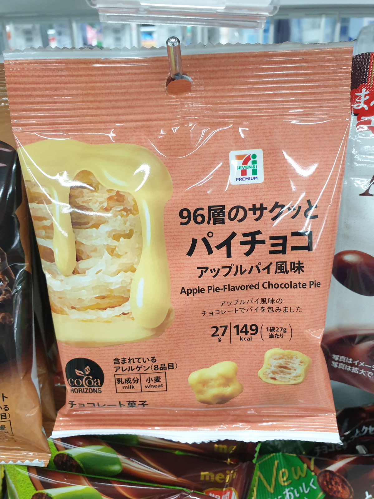
Apple pie flavored chocolate pie. They were very crunchy, with an apple flavored white chocolate coating, presumably what was intended by the name.
Japan.
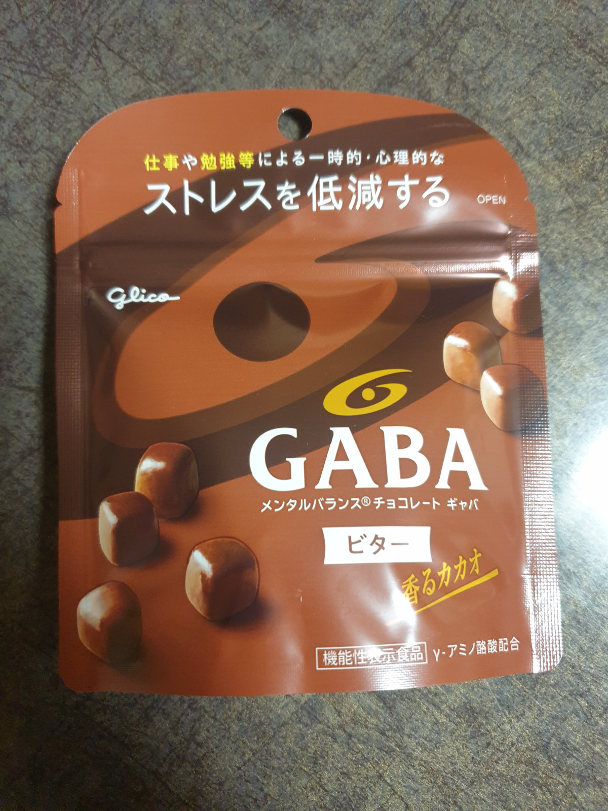
GABA, "メンタルバランス チョコレート ギャバ", "mentaru baransu chokoretto gaba", mental balance chocolates.
Japan.

Individually wrapped Camembert Cheese Cakes, from Zao. They taste nothing like Camembert cheese in France.
Japan.

Camembert waffle cookies, also from Zao.
Japan.

Cheese palmiers. Imagine a normal
palmier cookie, but with the same cheese powder used for something like doritos or cheetoes.
Taiwan.

"MY CHEWY MILK CANDY. Good taste of the fashion life."
Chewable corn candy, and the flavor is almost the same as the breakfast cereal Corn Pops.
Thailand.

"みかんグミ", mikan gumi, mandarin flavor gummies. Circle text reads "かわいいアイス型", kawaii aisu kata, cute ice-cream-popsickle type. These tasted like orange ice cream popsickles.
Japan.
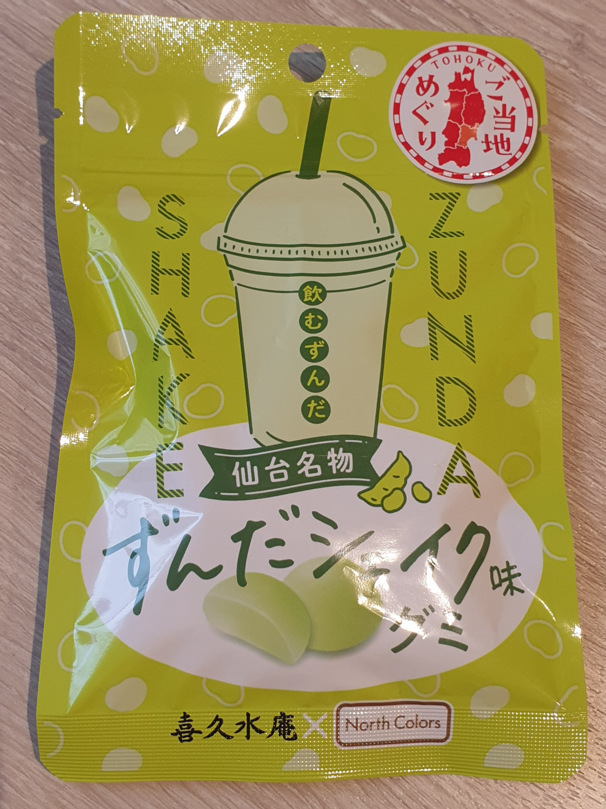
Zunda shake flavored gummies from Sendai (仙台名物). Flavor mostly resembled vanilla milkshake, but in gummy form. Text on the cup says "飲むずんだ", "nomu zunda", "[I] drink zunda"
Japan.

"コーラフロート", ko-ra furo-to, cola
ice cream float flavored agar cube candy.
Japan.

Tough Gummy. The three flavors are:
"コーラ" or "kora" (cola),
"エナジードリンク" or "enaji dorinku" (energy drink), and
"ソーダ" or "soda" (lemon-lime type of soda).
Japan.
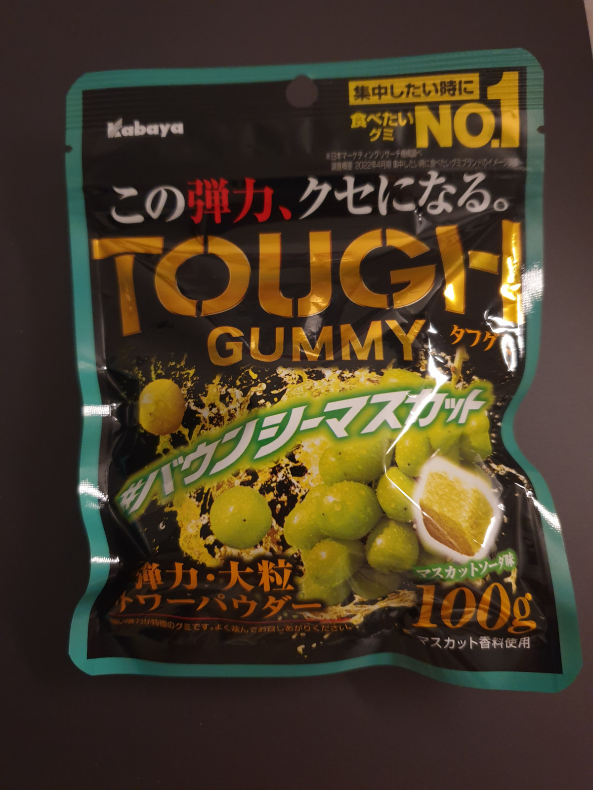
Tough Gummy. This time, the flavor is "バウンシーマスカット", "baunshii masukatto", bouncy Muscat grapes.
Japan.
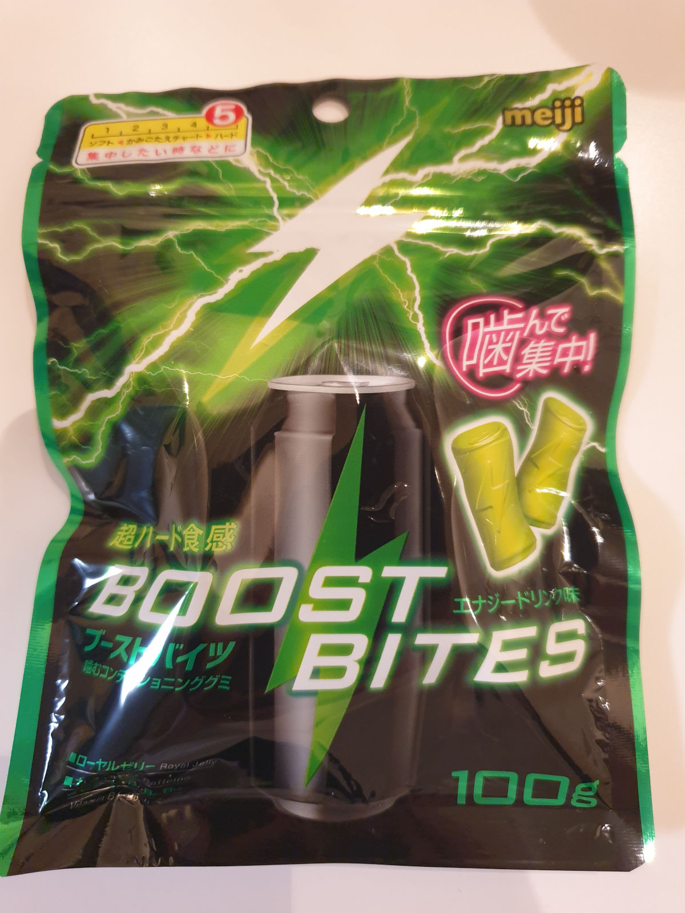
BOOST BITES. These are energy drink gummies with vitamins, and caffeine. Flavor is "エナジードリンク" or "enaji dorinku", energy drink. Pink text says "噛んで集中", "kande shuuchuu", "bite concentration!"
Japan.
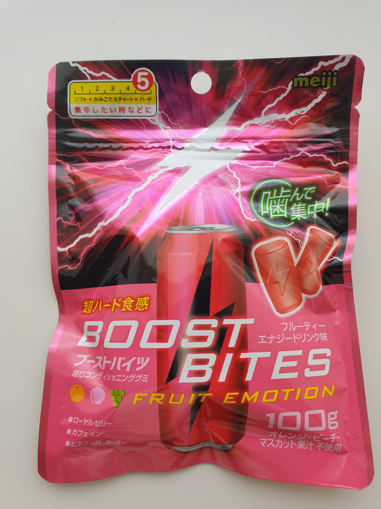
Fruit Emotion BOOST BITES. As the other BOOST BITES, but this time the flavor is "フルーティーエナジードリンク" or "furuutii enaji dorinku", fruity energy drink. These were much better tasting than the energy drink flavored ones.
Japan.
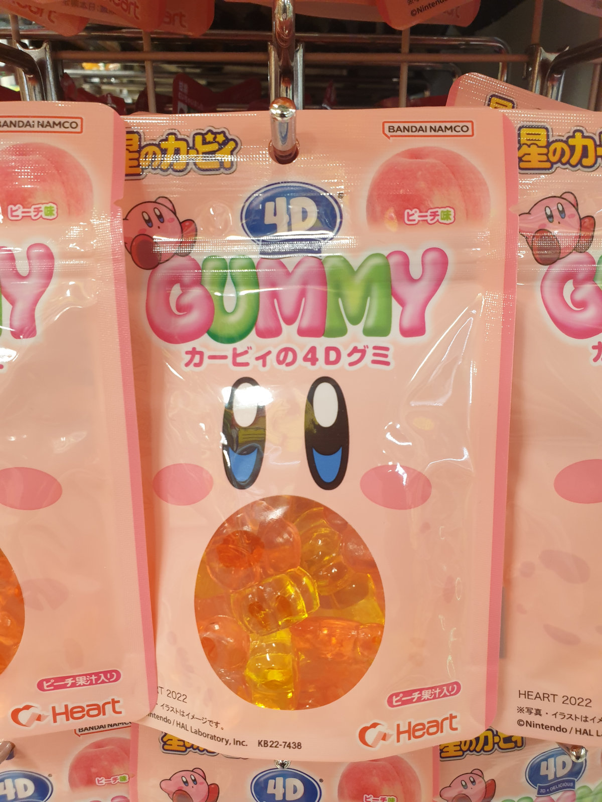
"カービィ4Dグミ", Kirby-themed 4D gummies. "ピーチ味", peach flavor.
The "4D" means "3D + DELICIOUS".
Japan.
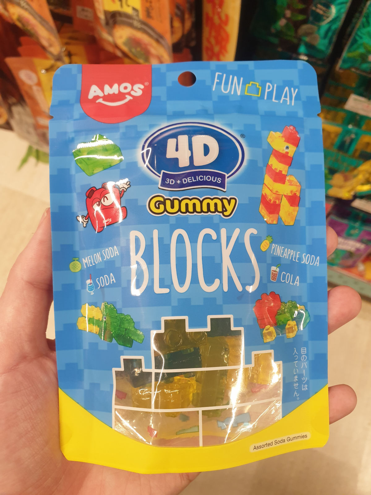
Block gummies, similar to LEGO bricks.
Again, the "4D" means "3D + DELICIOUS".
Japan.

Veggie šťáva, vegetable juice gummies. Flavors are "borůvka s červenou řepou", meaning blueberry and beetroot, and "malina s dýní", meaning raspberry with pumpkin.
Czech Republic.

70% Dark chocolate, made with olive oil and sea salt.
Spain.
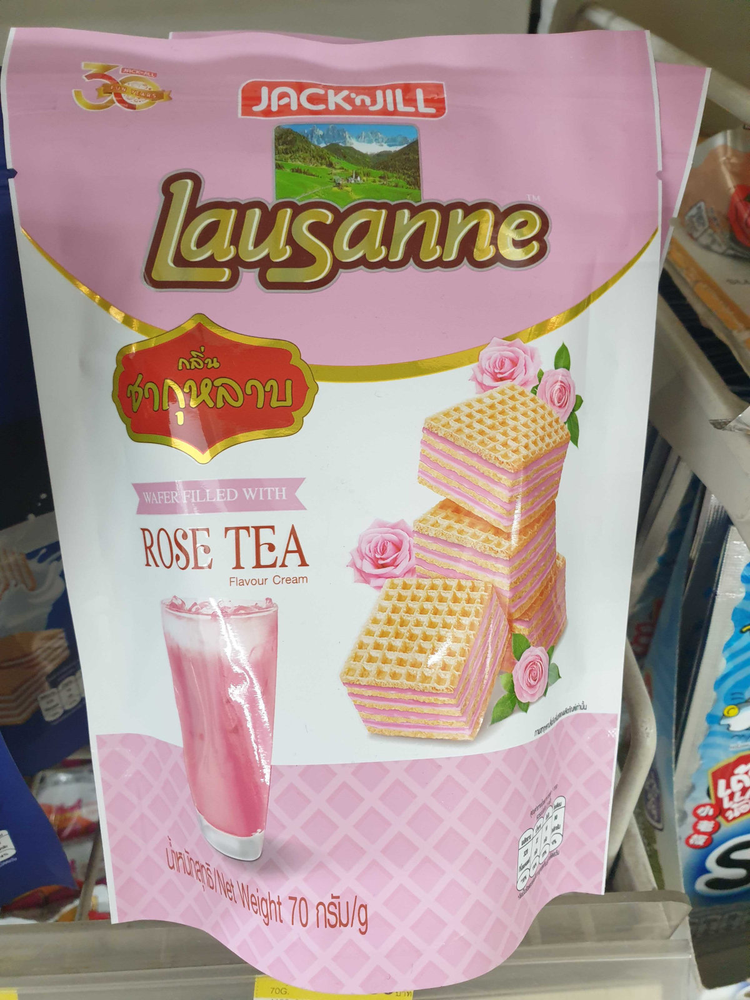
Rose tea cream flavor wafer cookies. The rose flavor was very strong.
Thailand.
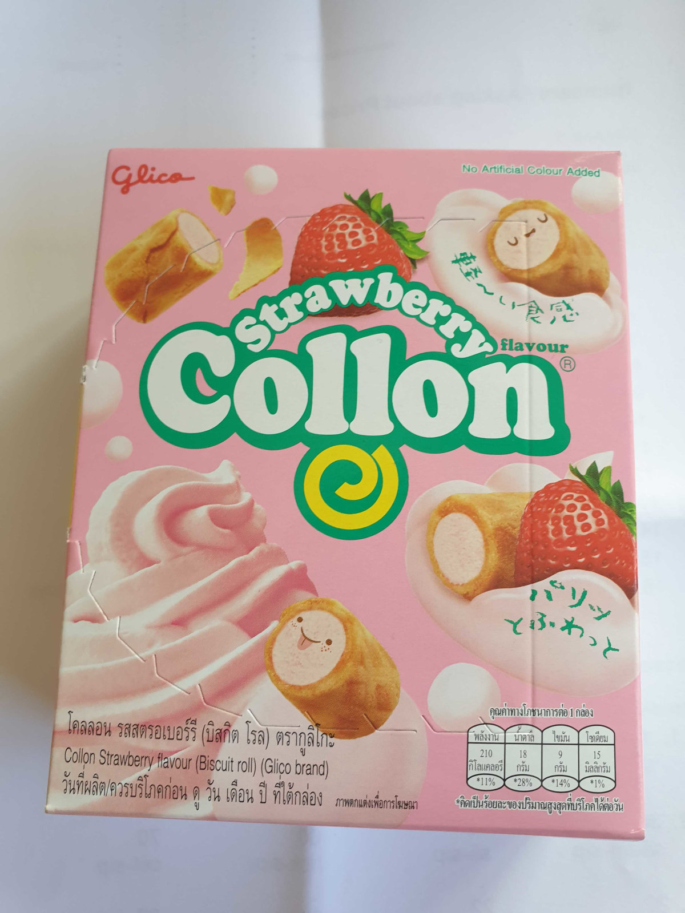
Strawberry roll cookies.
Thailand.
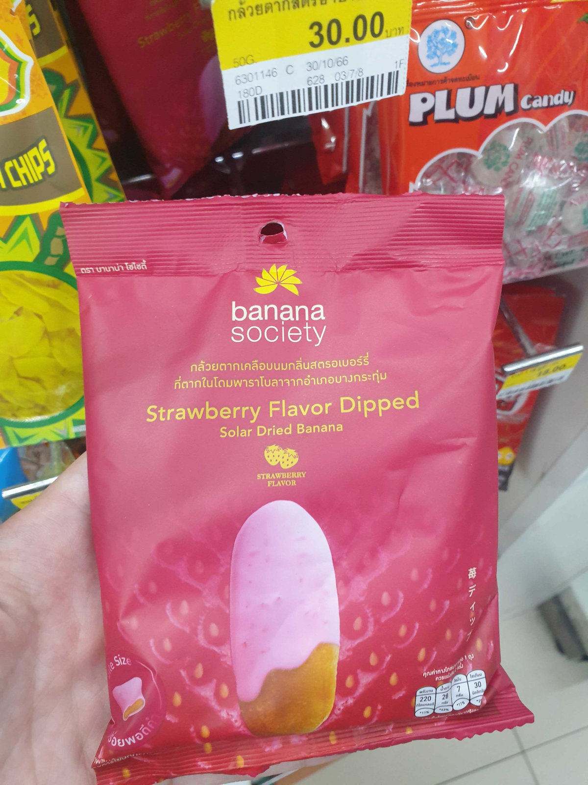
Banana chips with strawberry cream flavor.
Thailand.
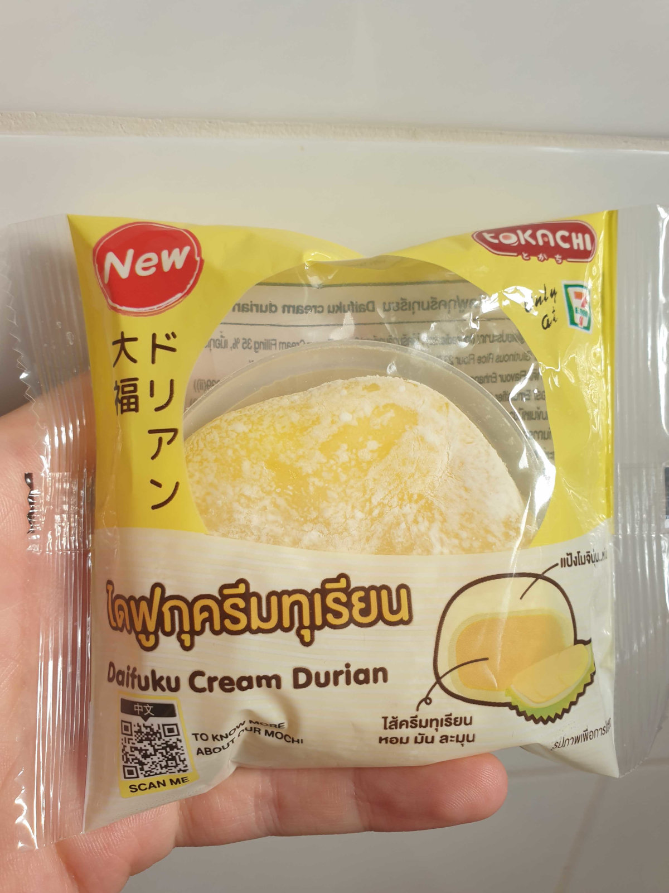
A mochi with durian filling.
Thailand.